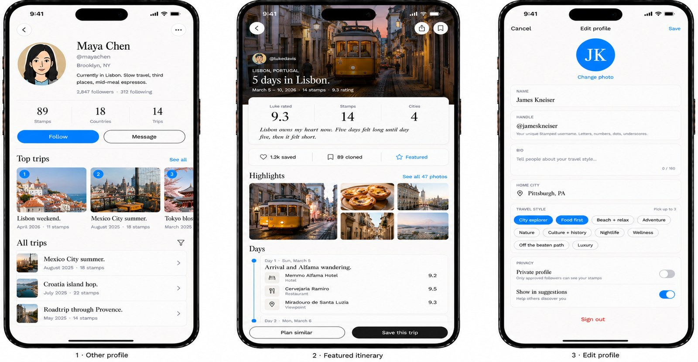
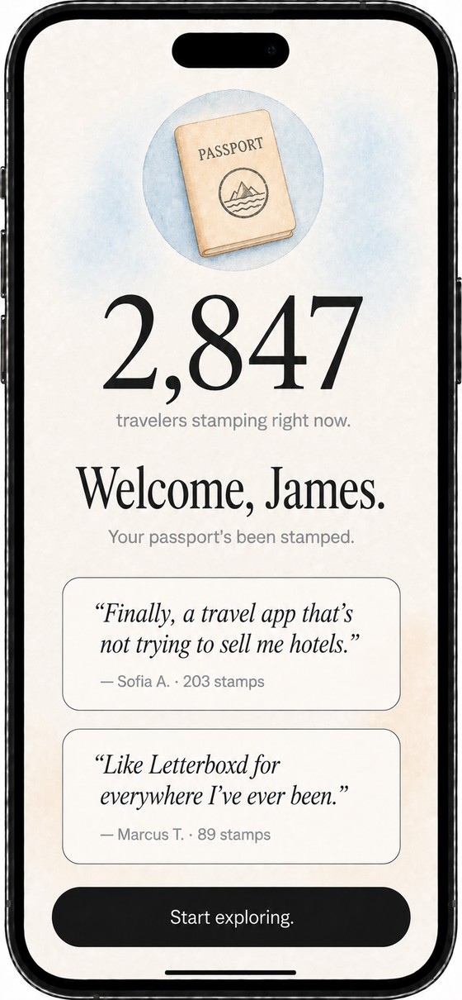
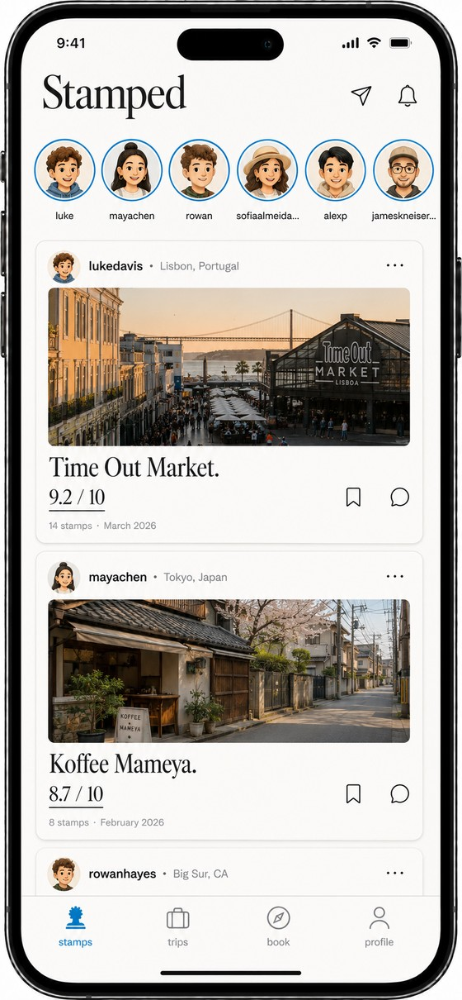
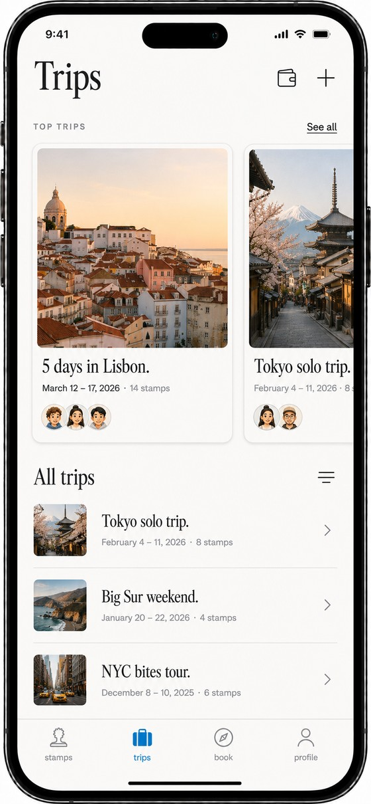
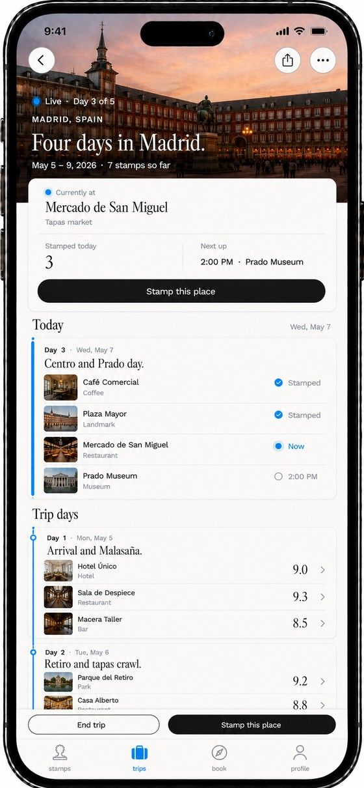
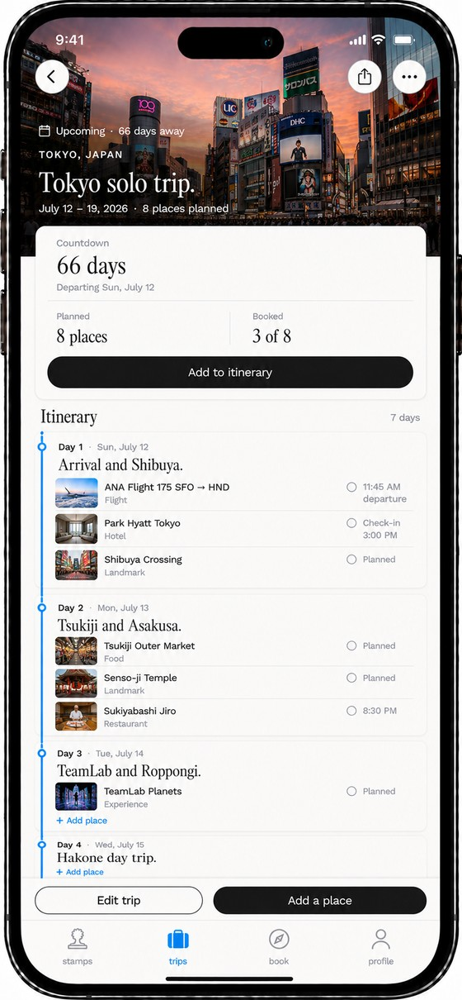
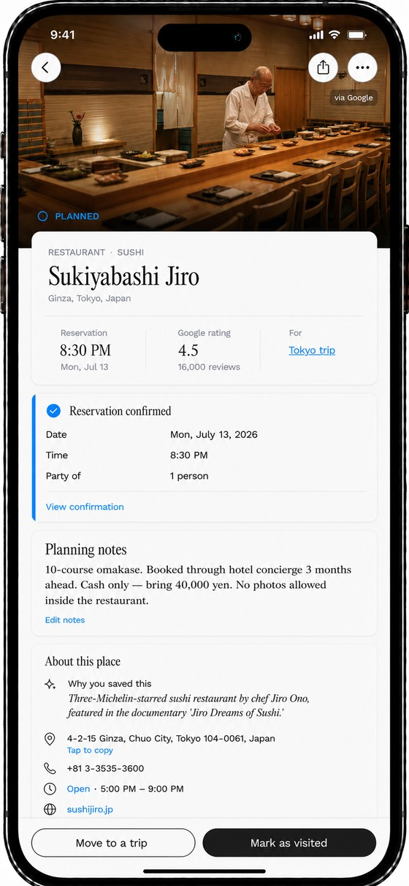
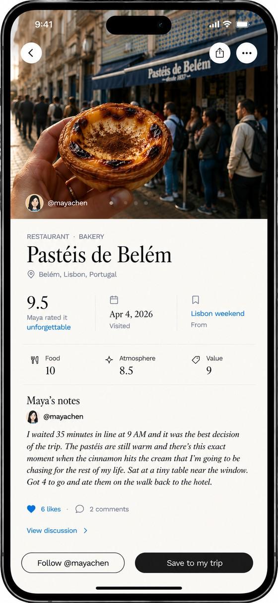
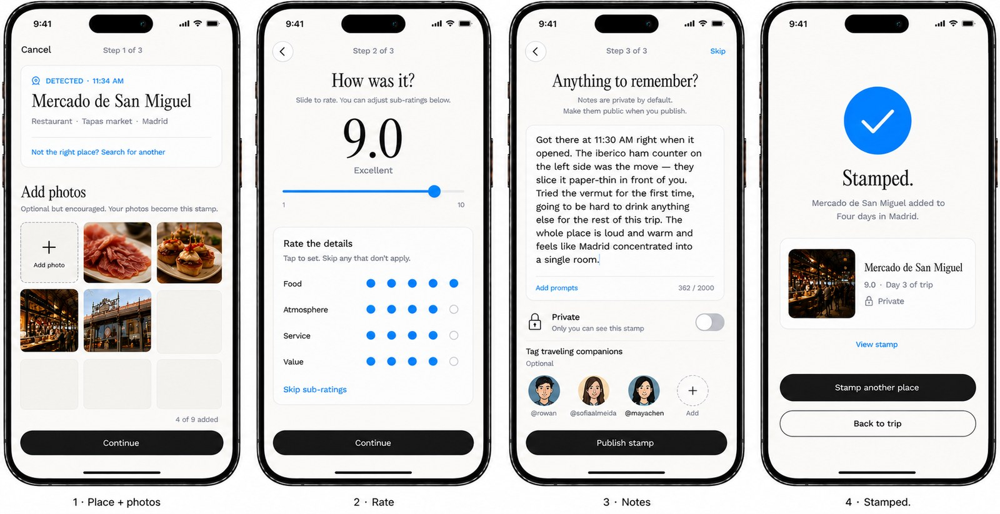
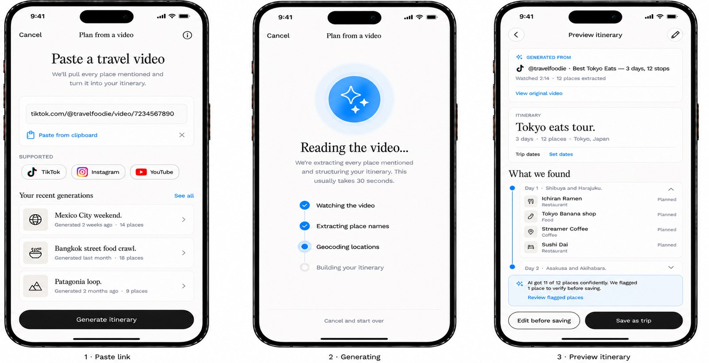

Concept study
Stamped. Fewer places, told better.

Concept, Visual Direction, Storytelling
Travel app / content concept
In development
Brand concept, content direction, product narrative
Taste, with nothing in the way of it
Travel content has a volume problem. Every destination has ten thousand near-identical reels — the same drone shot, the same trending audio, the same hidden gem that four million people have already saved. Stamped takes the opposite bet.
The premise is to treat a trip the way a fashion house treats a collection: editorial pacing, considered typography, photographs allowed to hold a frame for longer than an attention span. The product is the memory of the place, not the itinerary.
Stamped isn't a moodboard. It's a designed product end to end: the welcome, an editorial feed, trips you can actually plan, and reviews that read like a friend wrote them rather than a hotel.
Onboarding & feed


Trips



Places & reviews



Two flows carry the app. Journal a trip after you live it, while it is still fresh enough to rate honestly. Or hand it a video you already shot and let it build the trip back out of the footage.

Journal a trip after you live it

Generate a trip from a video
Everything else on this site was made inside somebody's constraints — a product that already existed, a team, a deadline. Stamped had none of those. It is what the work looks like when the only brief is the one I set, which is the more useful thing to judge me on.